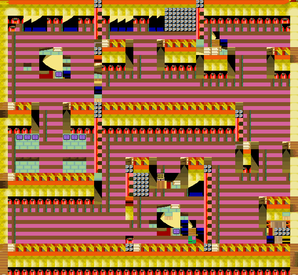
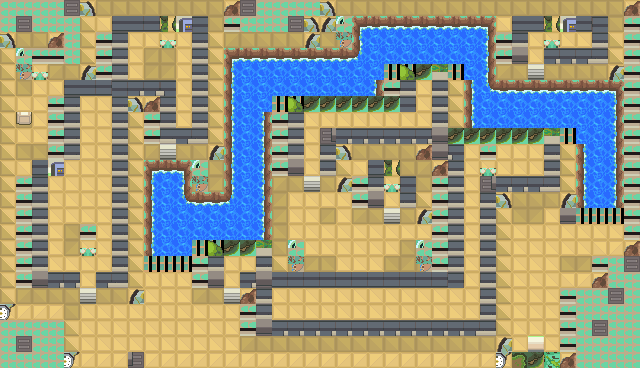
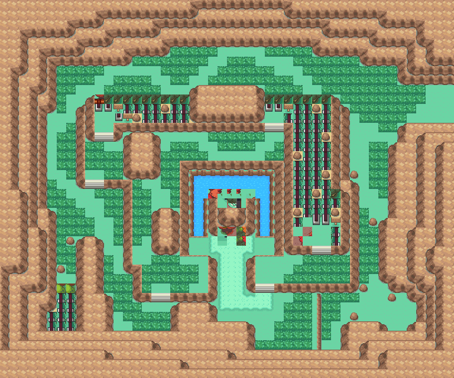

全复药
回复1只宝可梦的 所有HP和异常状态。
获取：训练师之塔·商店 ／ 烟墨市·商店 ／ 石英高原·商店 ／ 吉野市·商店 ／ 桔梗市·商店 ／ 桧皮镇·商店 ／ 缘朱市·商店 ／ 浅葱市·商店 ／ …等 29 处
用途
回复1只宝可梦的 所有HP和异常状态。
标价 3000 口袋：道具
获取方式
购买
- 训练师之塔（区域179） · 标价 3000 · 地图｜静态图 · 触发条件待补
- 烟墨市（区域152） · 标价 3000 · 地图｜静态图 · 触发条件待补
- 石英高原（区域97） · 标价 3000 · 地图｜静态图 · 触发条件待补
- 吉野市（区域144） · 标价 3000 · 地图｜静态图 · 触发条件待补
- 桔梗市（区域145） · 标价 3000 · 地图｜静态图 · 触发条件待补
- 桧皮镇（区域146） · 标价 3000 · 地图｜静态图 · 触发条件待补
- 缘朱市（区域148） · 标价 3000 · 地图｜静态图 · 触发条件待补
- 浅葱市（区域149） · 标价 3000 · 地图｜静态图 · 触发条件待补
- 桧皮镇（区域146） · 标价 3000 · 地图｜静态图 · 触发条件待补
- 城都矿山（区域214） · 标价 3000 · 地图｜静态图 · 触发条件待补
- 满金市（区域147） · 标价 3000 · 地图｜静态图 · 触发条件待补
地面隐藏
- 冠军之路（区域132） · (35,2) · 数量 1 · 地图｜静态图
- 17号公路（区域117） · (10,53) · 数量 1 · 地图｜静态图
- 愤怒之湖（区域187） · (25,42) · 数量 1 · 地图｜静态图
- 擂钵山（区域99） · (32,18) · 数量 1 · 地图｜静态图
人物剧情
- 桔梗市（区域145） · (7,24) · 与坐标处人物交互 · 数量 1 · 地图｜静态图 · 触发条件待补
- 野生原野区（区域136） · (37,15) · 与坐标处人物交互 · 数量 1 · 地图｜静态图 · 触发条件待补
- 铃铛塔（区域135） · (2,29) · 与坐标处人物交互 · 数量 1 · 地图｜静态图 · 触发条件待补 · 相同来源 2 条
- 冰天地（区域181） · (3,19) · 与坐标处人物交互 · 数量 1 · 地图｜静态图 · 触发条件待补 · 相同来源 2 条
- 华蓝洞（区域141） · (11,16) · 与坐标处人物交互 · 数量 1 · 地图｜静态图 · 触发条件待补
- 华蓝洞（区域141） · (33,12) · 与坐标处人物交互 · 数量 1 · 地图｜静态图 · 触发条件待补
- 41号水路（区域166） · (19,11) · 与坐标处人物交互 · 数量 1 · 地图｜静态图 · 触发条件待补
- 铃铛塔（区域135） · (3,4) · 与坐标处人物交互 · 数量 1 · 地图｜静态图 · 触发条件待补
- 26号道路（区域203） · (29,27) · 与坐标处人物交互 · 数量 1 · 地图｜静态图 · 触发条件待补
- 23号公路（区域123） · (21,140) · 与坐标处人物交互 · 数量 1 · 地图｜静态图 · 触发条件待补
- 冠军之路（区域132） · (21,36) · 与坐标处人物交互 · 数量 1 · 地图｜静态图 · 触发条件待补
- 擂钵山（区域99） · (50,46) · 与坐标处人物交互 · 数量 1 · 地图｜静态图 · 触发条件待补
- 漩涡岛（区域176） · (13,18) · 与坐标处人物交互 · 数量 1 · 地图｜静态图 · 触发条件待补
- 漩涡岛（区域176） · (7,9) · 与坐标处人物交互 · 数量 1 · 地图｜静态图 · 触发条件待补
- 漩涡岛（区域176） · (40,15) · 与坐标处人物交互 · 数量 1 · 地图｜静态图 · 触发条件待补
数据来源
- 来源文档：out/items.json（
/19） - 表索引 index 0019；内嵌 itemId 19；口袋 ITEMS (id=1)；type 1；hold_effect 0/255；importance 0；unk19 0
- 获取来源文档：encounters_research/out/shops.json、maps_research/out/events/events.json、maps_research/out/scripts/scripts.json
- 获取记录 ID：
shop:081649A8:2:2:10、shop:089C7965:7:31:2、shop:089C7965:7:34:3、shop:089C7965:7:45:1、shop:089C7965:7:46:3、shop:089C7965:7:47:4、shop:089C7965:7:48:7、shop:089C7965:7:49:11、shop:08171CC4:1:35:7、shop:08171E7C:1:37:4、shop:089EB937:7:50:16、hidden:1:39:1、hidden:3:35:7、hidden:3:100:4、hidden:55:10:2、script_item_candidate:08167853:3:14、script_item_candidate:std:081BE7FB:1:64、script_item_candidate:std:081BE9B5:1:62、script_item_candidate:std:081BE9B5:53:4、script_item_candidate:std:081BEA5E:1:72、script_item_candidate:std:081BEA6B:1:73、script_item_candidate:std:081BECC1:3:61、script_item_candidate:std:087BD908:55:24、script_item_candidate:std:087BE179:3:106、script_item_candidate:std:087BEB63:3:42、script_item_candidate:std:087BECE8:53:8、script_item_candidate:std:08D55D16:55:11、script_item_candidate:std:09CD0843:55:15、script_item_candidate:std:09CD089E:55:16、script_item_candidate:std:09CD08AB:55:16 - 说明文字解码来源：
reference/SAVE_HOME_GAME_DATA.json.charmap
地点地图
共享RGB底图；点击可缩放定位。数字对应本页相关地点，不代表地图上全部事件。


展开其余 23 张地点地图
缘朱市

1 全复药（1,5）
浅葱市

1 全复药（1,5）
桧皮镇

1 全复药（2,3）
城都矿山
1 全复药（10,5）
满金市

1 全复药（22,6）
冠军之路

1 全复药（35,2）
17号公路

1 全复药（10,53）
愤怒之湖

1 全复药（25,42）
擂钵山

1 全复药（32,18）
桔梗市

1 全复药（7,24）
野生原野区

1 全复药（37,15） 底图有1个图块缺少原始数据。
铃铛塔

1 全复药（2,29）
冰天地

1 全复药（3,19）
华蓝洞

1 全复药（11,16）
华蓝洞

1 全复药（33,12）
41号水路

1 全复药（19,11）
铃铛塔

1 全复药（3,4）
26号道路

1 全复药（29,27）
23号公路

1 全复药（21,140）
冠军之路

1 全复药（21,36）
擂钵山

1 全复药（50,46）
漩涡岛

1 全复药（13,18）
漩涡岛

1 全复药（7,9）